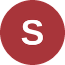

Why it matters in nursing education
If it wasn’t documented, it wasn’t done
Nurses learn early that documentation is part of the care. We ask students to document what they do for patients. This session asks: what if they documented their writing process too?
AI detectors guess from the final product, and they flag some students far more than others, including non-native English writers, with emerging evidence of more false flags for neurodivergent students (Liang et al., 2023; Eaton, 2025). Many nursing students are multilingual, and a false flag can put a student’s place in the program at risk. Documentation is different: it shows how the work developed, and it starts a conversation instead of an accusation.
The free ‘Revision History’ extension for Chrome reads the edit history Google Docs already keeps: writing time, every paste, who wrote what, and a replay. It isn’t an AI detector. It shows the process, and you make the call.
The approach
Make your students SHOW their work
Four steps to redesign a writing assignment around the process, in any nursing course and any modality.

Structure the assignment
Milestones in one shared Google Doc. You’re an editor, all writing happens in the Doc, and students submit the link.
Hold students accountable
At the first milestone, check the history for pasting and for anyone not taking part. Accountability, not grading.
Observe and respond
Formative feedback at each milestone. Students revise in the same Doc, so the history shows their growth.
Weigh the whole picture
Grade development, revision and participation, not only the final product.
Example 1 · One student, one Doc
Writing course: a teaching statement
Most of the work of SHOW happens in the assignment instructions. Here are Sharon Titus’s submission instructions for an individual teaching statement in her nursing course. They set up S and H before a single word is written.
How to submit (follow these steps in order)
- Create a new Google Doc. Title it LastName_FirstName_Teaching Statement.
- Share it with your faculty as Editor. Click the blue Share button, enter your faculty’s email, change the role from Viewer to Editor, and click Send. Viewer or Commenter access will prevent grading and will be treated as a missed submission.
- Submit the URL in Canvas by Wednesday. Paste the link into the text-entry box. Confirm it works by opening it in a private browser window, or ask a classmate to test it.
- Write your statement directly in the Google Doc. Do all drafting, revising, and analysis in this document from start to finish.
Important submission rules
- Do not download your document as a Word file or PDF and upload it to Canvas. Only the shared Google Doc link will be accepted.
- Your instructor will grade directly in your Google Doc and review the revision history to confirm authorship.
- Large copied, pasted, or imported content will receive a grade of 0. This includes text pasted from another document, a website, or an AI tool.
- Do not change sharing permissions or edit the document after the deadline unless instructed.
Expect some pushback, and read it as a good sign. Students who don’t like writing in the Doc are often reacting to the fact that they now have to do the work themselves.
Example 2 · A group, one shared Doc
Group project: an applied data course
Brianna Pack teaches statistics in the undergraduate nursing program. Students gather real-world data and run the analysis as a group, and the report is built milestone by milestone in one shared Google Doc. Groups add two things the history can show: who participated, and who wrote what.
Read the on-screen captions
- How do you make your students SHOW their work?
- A group project set up with SHOW.
- “Add me as an editor when your group creates this Google Doc.” Instructor sees every draft.
- “Do all writing directly in the Google Doc.” No pasting means a visible process.
- “Looking Ahead: This brainstorm is the first draft of your project proposal.” Feedback comes before the final version.
- “Submit the Google Doc shareable link in the Canvas submission box.” Only the original Doc keeps its history.
- From detection to documentation: the process is the evidence. Try it: redesign one assignment with SHOW.
After the standard was set at the first milestone, very few students pasted on the next assignment, and group participation improved. When a paste did show up, it started a conversation, not an accusation.
Same approach, different courses
Side by side
| SHOW step | Writing course: individual teaching statement | Applied course: group data project |
|---|---|---|
| Structure | Drafts of one statement in one individual Doc, shared with faculty as Editor | Milestones for data, analysis and report in one group Doc |
| Hold accountable | Large pastes earn a zero | No pasting, and every member contributes |
| Observe and respond | Comments on drafts, then revision in the Doc | Feedback on survey questions, then revision in the Doc |
| Weigh the whole picture | The history confirms authorship and growth | Credit for each member’s part |
Any modality. Face-to-face, hybrid or online: almost every course runs its written work online now, so wherever the writing happens in a shared Doc, SHOW applies. That includes clinical and simulation coursework, like reflections and care plans.
Now your course
Redesign one assignment
Think of a writing assignment where you couldn’t be sure the work was the student’s own. Is it closer to the writing course or the group project? Start from that column, and add one SHOW step at a time.
Sample assignment language you can paste in
- Add me as an editor when you create this Google Doc. I use the revision history to verify participation and authorship and ensure fairness. Students who do not show active involvement in the Google Doc will not receive credit.
- Do all writing directly in the Google Doc. The revision history is how I see your writing process, and the process is part of what this assignment asks for. Content that is written elsewhere and pasted, imported, or uploaded into the document cannot be verified, so it will receive a zero.
To submit: Share the Doc with your faculty as Editor, and submit the Google Doc’s link in Canvas. Do not upload a Word or PDF copy.
Know the limits
- Pasting from elsewhere. Students can draft in another file and paste it in, so some authorship can’t be verified. Treat a paste as a reason to ask, and set the expectation at the first milestone.
- Internet access. Composing in Google Docs needs a steady connection, which can disadvantage some students. Build in flexible milestones.
- Infrastructure. Google Workspace and Chrome extensions aren’t standard in every nursing program. The SHOW approach still works with any tool that keeps a version history.
Connections to the AACN Essentials
Process-based assessment supports Domain 9, Professionalism (accountability and integrity), and Domain 8, Informatics and Healthcare Technologies. Documenting, revising and owning your work are habits of nursing practice.
Learn the tool
Three short videos
Each video is about a minute, silent with captions, and shows the tool on a real Google Doc. Follow along on your own Doc whenever you’re ready.
Take it with you
Also presented at OLC Accelerate 2026
The OLC version applies the same approach to online teaching across disciplines, with a hands-on walkthrough.
References
- Eaton, S. E. (2025). Neurodiversity and academic integrity: Toward epistemic plurality in a postplagiarism era. Teaching in Higher Education. https://doi.org/10.1080/13562517.2025.2583456
- Gay, K., & Muscanell, N. (2026, March 23). 2026 EDUCAUSE students and technology report: Steady through change. EDUCAUSE.
- Liang, W., Yuksekgonul, M., Mao, Y., Wu, E., & Zou, J. (2023). GPT detectors are biased against non-native English writers. Patterns, 4(7), Article 100779. https://doi.org/10.1016/j.patter.2023.100779
- Schmitz, A., & Laird, E. (2025, December). AI-powered pedagogy: A guide to evidence-based teaching tools. EDUCAUSE Review.
- Revision History. (n.d.). Writing process visibility for Google Docs & Slides. https://revisionhistory.com